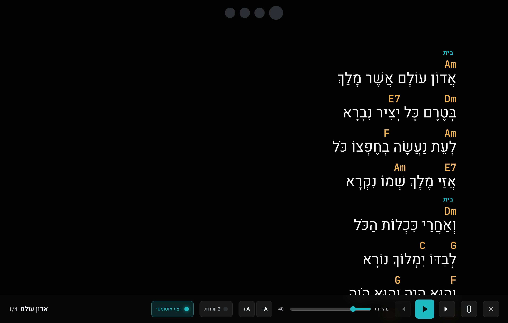
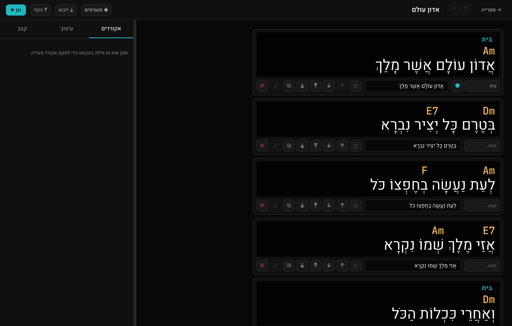
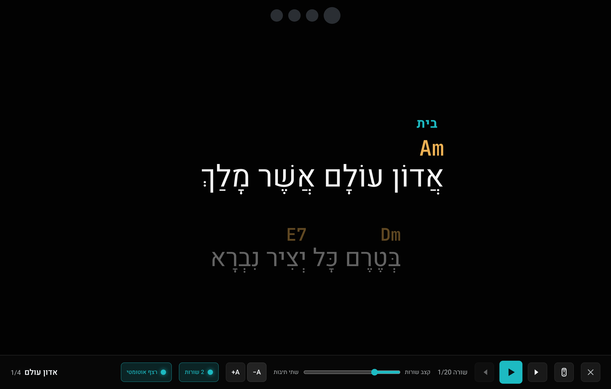

הבמה שלך,
על המסך.
טלפרומפטר חי למילים, אקורדים, טאבים ותווים. כותבים שיר, עולים לבמה במסך מלא עם מטרונום וגלילה אוטומטית — והכול רץ מקומית, בלי אינטרנט.
בלי התקנה לדפדפן · המידע נשמר אצלך במכשיר

כל מה שצריך כדי לנגן.
מהכתיבה ועד הבמה — כלי אחד, מהיר, שעובד גם כשאין רשת.
עורך חכם — מילים, אקורדים, טאבים ותווים
סמן אות ובחר אקורד מלוח בסגנון Apple, או הקלד C#m7/G. הוסף שורות טאבים בהקלקה, או כתוב סולו בתווים על חמשה אמיתית — עם קווי תיבה לפי המשקל והשמעת הצליל בלחיצה.
מצב הופעה
מסך מלא, מטרונום ויזואלי, גלילה אוטומטית, ספירה לאחור ומצב 2 שורות גדול.
שלט מהטלפון
סרוק QR והפוך את הטלפון לשלט — נגן, הבא, מהירות, וגם המילים בזמן אמת.
עובד אופליין
הכול מקומי במכשיר. בלי שרת, בלי חשבון, בלי תלות ברשת על הבמה.
גיבוי וייבוא מלא
שמור את כל השירים, הסטים וההגדרות לקובץ אחד — והעבר בין מכשירים בקליק.
סטים ורשימות
בנה סדר הופעה, ונגן שיר אחרי שיר אוטומטית עם מעבר חלק.
כותבים כמו שקוראים.
עברית ואנגלית, ימין‑לשמאל ושמאל‑לימין, זה לצד זה. האקורדים יושבים בדיוק מעל האות הנכונה — גם בכתב מעורב.
- תיוג קטעים (אינטרו / בית / פזמון) עם צבעים מותאמים
- צביעת קטעי טקסט והוספת הערות לסולואים
- בחירה, שכפול וסידור של כמה שורות בבת אחת

מהרעיון לבמה
בשלושה צעדים.
כתוב את השיר
מילים, אקורדים מעל המילים, וקטעי סולו בטאבים או בתווים.
כוון קצב ועיצוב
BPM, משקל, צבעים וגדלי פונט — מטרונום ויזואלי שמראה את הפעמה.
עלה לבמה
מסך מלא, גלילה אוטומטית, ושלט מהטלפון. בלי אינטרנט.
קריא מהצד השני של הבמה.
תצוגת 2 השורות מציגה את השורה הנוכחית בענק עם השורה הבאה מעומעמת — ועוקבת אחרי הקצב, בלי ידיים.
- אור אדום = פעמה ראשונה, כחול = שאר הפעמות
- שינוי גודל פונט תוך כדי, לאורך או לרוחב

מוכן לעלות לבמה?
פתח את האפליקציה ישר בדפדפן — בלי התקנה. או הורד גרסת Windows עצמאית.